ETX1100/5900 Business Statistics
Week 2 Probability: Concepts & Applications Introduction to the Normal Distribution
Source: Workshop_slides_Week_2_with_solutions.pdf, page 1
Visual from source page 1.
Learning Outcomes for Week 2
Fundamentals of Probability Understand and calculate the concept of probability Interpret probabilities: Marginal probability Joint probability Conditional probability Evaluate the relationship between variables Introduction to the Normal Distribution Understand the concept of a continuous random variable Analyse the characteristics of a normal distribution Calculate and interpret probabilities for continuous random variables using Excel
Learning Outcomes for Week 2
Understand the concept of probability Calculate and interpret probabilities: Marginal probability Joint probability Conditional probability Apply the concepts of probability for categorical data analysis Evaluate the relationship between variables Textbook references: Berenson et al Basic Business Statistics 5th edition, Chapter 4 Sections 4.1 and 4.2 Chapter 6 Sections 6.1-6.2
What is PROBABILITY?
Probability = quantification of chance / likelihood of an occurrence Probability statements: Event A has zero probability P(A) = 0 \rightarrow There is no chance that event A will occur Event B has probability of one P(B)=1 \rightarrow Event B will occur with 100% certainty Probability of all possible events add to 1 Eg Experiment: Toss a fair coin PHead=0.5 PTail=0.5 What is the total probability? P(\text{Head}) + P(\text{Tail}) = 1
Source: Workshop_slides_Week_2_with_solutions.pdf, page 4
Visual from source page 4.
Union
P(A \text{ or } B) or P(A \cup B) describes either A OR B PA or B =PA+PB-PrA and B Note: P(A) and P(B) are referred to as marginal probabilities Intersection (Joint probability) & Union Intersection (joint probability) Helps us understand the nature of the relationship between two events P(A \text{ and } B) or P(A \cap B) - known as “JOINT” probability
Source: Workshop_slides_Week_2_with_solutions.pdf, page 5
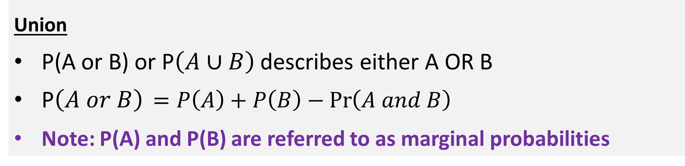
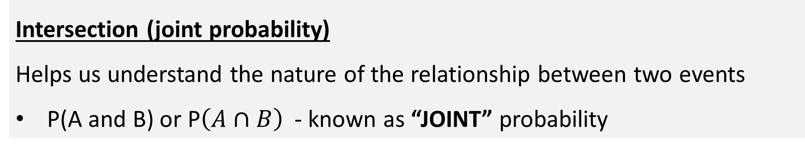
Conditional Probability
Conditional Probability Probability of an event (A) given that (conditional on) another event (B) having occurred. P(A given B) or P (A|B) is known as conditional probability Conditional Probability=Joint probability of the two eventsMarginal probability of the condition PAB=P(A∩B)P(B)
Source: Workshop_slides_Week_2_with_solutions.pdf, page 6
Visual from source page 6.
Mutually Exclusive and Independent Events
Mutually exclusive: Definition: Events that cannot occur together We know that P(A or B) = P(A) + P(B) – P(A and B). For mutually exclusive events, P(A and B) = 0 Example: Toss a fair coin P(Not Head) = P(Tail) = 1-P(Head) Independent: Definition: Probability of one event occurring unaffected by the outcome of the other Event A is independent of event B if: P(A|B) = P(A) OR PA∩B=PA\times{}P(B)
Source: Workshop_slides_Week_2_with_solutions.pdf, page 7
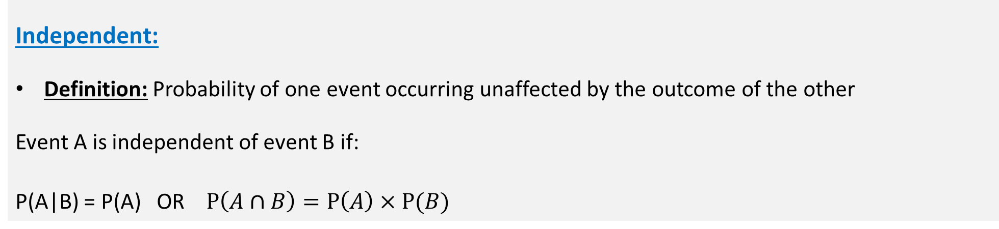
Visual from source page 7.
Frequency Table
Open“Heart Disease” sheet in Week 2 Workshop Data.xlsx. It contains data on the diagnosis of heart disease and exercise levels. Generate 2 relative frequency tables Exercise level Medical condition What information do the tables convey?
Instructions:
Exercise Level Place the cursor in any cell within the data Drag & drop Exercise under 1. Rows & 2. Values. Right-click on Exercise entries > Value Field Setting > Summarize value by > Count; Show Values As > % of Column Total Medical Condition Place the cursor in any cell within the data Drag & drop Heart Disease under 1. Rows & 2. Values. Right-click on Heart Disease entries > Value Field Setting > Summarize value by > Count; Show Values As > % of Column Total
Source: Workshop_slides_Week_2_with_solutions.pdf, page 9
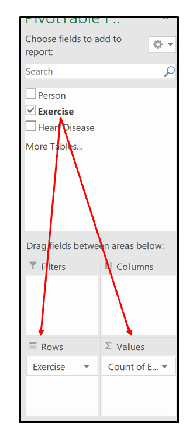
Visual from source page 9.
Relative Frequency Tables:
Source: Workshop_slides_Week_2_with_solutions.pdf, page 10
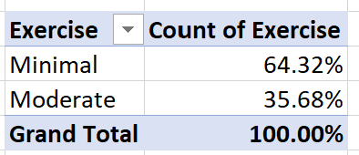
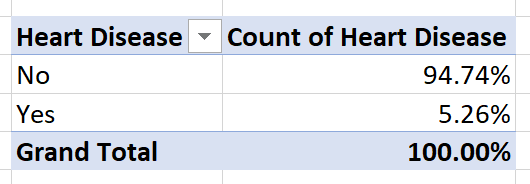
Calculating Joint Probabilities
Construct a two-way frequency table (contingency table/Pivot table) by placing Heart Disease in rows and Exercise in Columns. Display as “count” Count of Heart Disease Exercise Level Heart Disease Minimal Moderate Grand Total No 2996 1741 4737 Yes 220 43 263 Grand Total 3216 1784 5000 Probabilities Exercise Level Heart Disease Minimal Moderate Grand Total No Yes Grand Total Convert to probabilities
Source: Workshop_slides_Week_2_with_solutions.pdf, page 11
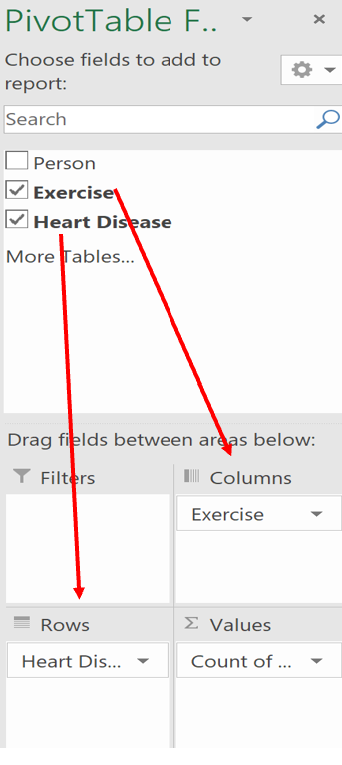
Visual from source page 11.
Calculating Joint Probabilities: Manual Calculations
Construct a two-way frequency table (contingency table/Pivot table) by placing Heart Disease in rows and Exercise in Columns. Display as “count” Count of Heart Disease Exercise Level Heart Disease Minimal Moderate Grand Total No 2996 1741 4737 Yes 220 43 263 Grand Total 3216 1784 5000 Probabilities Exercise Level Heart Disease Minimal Moderate Grand Total No =2996/5000 =1741/5000 =4737/5000 Yes =220/5000 =43/5000 =263/5000 Grand Total =3216/5000 =1784/5000 1
Source: Workshop_slides_Week_2_with_solutions.pdf, page 12
Visual from source page 12.
Pivot table: % of Grand Total
Construct a pivot table by placing Heart Disease in rows and Exercise in Columns. Display as “% of Grand Total” Count of Heart Disease Exercise Level Heart Disease Minimal Moderate Grand Total No 59.92% 34.82% 94.74% Yes 4.40% 0.86% 5.26% Grand Total 64.32% 35.68% 100.00%
Source: Workshop_slides_Week_2_with_solutions.pdf, page 13
Visual from source page 13.
Task 1: Heart Disease and Exercise Level
Count of Heart Disease Exercise Level Heart Disease Minimal Moderate Grand Total No 59.92% 34.82% 94.74% Yes 4.40% 0.86% 5.26% Grand Total 64.32% 35.68% 100.00% 1. If you choose someone at random from the population, what is the probability that they have no heart disease do a moderate amount of exercise do a moderate amount of exercise and have no heart disease do a moderate amount of exercise or have no heart disease 2. Are Heart Disease and Exercise levels mutually exclusive events?
Task 1: Heart Disease and Exercise Level
- Construct a new Pivot Table for Heart Disease and Exercise Level. Change the display settings to % Row Total. Use this table and answer the following questions: a. Write a probability statement that describes the value of 83.65% from your table? b. Interpret this value
- Are exercise levels and heart disease independent? Provide evidence to support your answer.
- A lower proportion of heart disease patients do moderate exercise compared to those who do not have heart disease. Construct a pivot table and provide probability statements to support this.
- The probability of heart disease reduces with moderate exercise compared to minimum exercise. Construct a pivot table and provide probability statements to support this.
Solutions for Task 1: Question 1
Count of Heart Disease Exercise Level Heart Disease Minimal Moderate Grand Total No 59.92% 34.82% 94.74% Yes 4.40% 0.86% 5.26% Grand Total 64.32% 35.68% 100.00% 1. If you choose someone at random from the population, what is the probability that they have no heart disease P(No Heart Disease) = 94.74% do a moderate amount of exercise P(Moderate) = 35.68%
Solutions for Task 1: Question 1
Count of Heart Disease Exercise Level Heart Disease Minimal Moderate Grand Total No 59.92% 34.82% 94.74% Yes 4.40% 0.86% 5.26% Grand Total 64.32% 35.68% 100.00% 1. If you choose someone at random from the population, what is the probability that they do a moderate amount of exercise and have no heart disease P(Moderate and No Heart Disease) = 34.82% do a moderate amount of exercise or have no heart disease P(Moderate or No Heart Disease) = P(Moderate) + P(No Heart Disease) – P(Moderate and No Heart Disease) = 35.68% + 94.74% - 34.82% = 95.6%
Solutions for Task 1: Question 2
Count of Heart Disease Exercise Level Heart Disease Minimal Moderate Grand Total No 59.92% 34.82% 94.74% Yes 4.40% 0.86% 5.26% Grand Total 64.32% 35.68% 100.00% 2. Are Heart Disease and Exercise levels mutually exclusive events? Definition of mutually exclusive events: Events that cannot occur together If A and B are mutually exclusive, P(A and B) = 0 P(Heart Disease and Minimal) = 4.4% P(Heart Disease and Moderate) = 0.86% Therefore Heart Disease and Exercise are not mutually exclusive.
Solutions for Task 1: Question 3
Q3a. Write a probability statement to describe the highlighted value. PrMinimalHeart Disease=83.65% Q3b. Interpret this value. If you only consider heart disease patients, 83.65% of them do minimal exercise OR Approximately 83.65% of patients with heart disease, do minimal exercise. Count of Heart Disease Exercise Heart Disease Minimal Moderate Grand Total No 63.25% 36.75% 100.00% Yes 83.65% 16.35% 100.00% Grand Total 64.32% 35.68% 100.00%
Source: Workshop_slides_Week_2_with_solutions.pdf, page 19
Visual from source page 19.
Solutions for task 1: Question 4
Are Exercise level and heart disease independent? Exercise level and heart disease are NOT independent There is a relationship between exercise and heart health! Count of Heart Disease Exercise Heart Disease Minimal Moderate Grand Total No 63.25% 36.75% 100.00% Yes 83.65% 16.35% 100.00% Grand Total 64.32% 35.68% 100.00% Are exercise levels and heart disease independent? Provide evidence to support your answer. P(Moderate|No Heart Disease) = 36.75% P(Moderate|Heart Disease) = 16.35% P(Moderate) = 35.68% Is P(Moderate|No Heart Disease) = P(Moderate)?? Conditional probability ≠ marginal probability Count of Heart Disease Exercise Heart Disease Minimal Moderate Grand Total No 59.92% 34.82% 94.74% Yes 4.40% 0.86% 5.26% Grand Total 64.32% 35.68% 100.00%
Source: Workshop_slides_Week_2_with_solutions.pdf, page 20
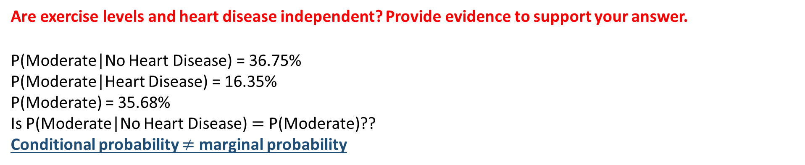
Visual from source page 20.
A lower proportion of heart disease patients do moderate exercise compared to those who do not have heart disease. Construct a pivot table and provide probability statements to this statement.
P(Moderate|No Heart Disease) = 36.75% P(Moderate|Heart Disease) = 16.35% What does this imply? A smaller proportion of heart disease patients do moderate exercise compared to those who do not have heart disease. Application of what you have learned: People with healthy hearts tend to do more exercise! Solutions for Task 1: Question 5 Count of Heart Disease Exercise Heart Disease Minimal Moderate Grand Total No 63.25% 36.75% 100.00% Yes 83.65% 16.35% 100.00% Grand Total 64.32% 35.68% 100.00%
Solutions for Task 1: Question 6
The probability of heart disease reduces with moderate exercise compared to minimum exercise. Construct a pivot table and provide probability statements to this statement. The condition here is exercise. P(Heart Disease|Minimum) = 6.84% P(Heart Disease|Moderate) = 2.41% Application of what you have learned: The probability of heart disease reduces with moderate exercise! Count of Heart Disease Exercise Heart Disease Minimal Moderate Grand Total No 93.16% 97.59% 94.74% Yes 6.84% 2.41% 5.26% Grand Total 100.00% 100.00% 100.00%
A company is interested in analyzing the efficacy of launching a new brand of frozen food products. They wish to study the various demographics of customers who have and have not tried their products using the Marketing worksheet in the dataset Week 3 Workshop Data.xlsx.
This data contains 6 variables: Person ID = the unique identifier of each person/respondent in the data. Raw Income = the income of the respondent. Gender = the gender (male or female) of the respondent. Live Alone = whether the respondent lives alone. Have Tried = whether the respondent has tried the new product or not. Income Category = the income range of the respondent. Task 2: Marketing (to be completed in your own time)
Instructions:
Construct contingency tables to analyse the relationship between “Have Tried” and 3 other variables: Live Alone, Income & Gender. Use these tables to answer the following questions. Include probability statements and contextual interpretations in your answers. What is the proportion of customers who live alone? What is the proportion of customers who have tried the frozen food product and live alone? What is the probability that a randomly selected customer earns more than $50,000? What is the probability that a randomly selected customer earns more than $50,000 and has tried the frozen food product? What proportion of customers who live alone have tried the frozen food product? What proportion of customers who have tried the frozen food product, live alone? Are there more males or females who have tried the frozen food product? Task 2: Marketing (to be completed in your own time)
What is the proportion of customers who live alone?
P(Live Alone = Yes) = 16.94% 16.94% of the customers live alone. Solutions for Task 2a (to be completed in your own time)
Source: Workshop_slides_Week_2_with_solutions.pdf, page 25
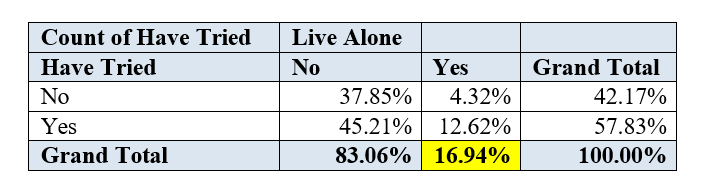
Visual from source page 25.
What is the proportion of customers who have tried the frozen food product and live alone?
P(Have Tried = Yes AND Live Alone = Yes) = 12.62% 12.62% of the customers have tried the frozen food and live alone. Solutions for Task 2b (to be completed in your own time)
Source: Workshop_slides_Week_2_with_solutions.pdf, page 26
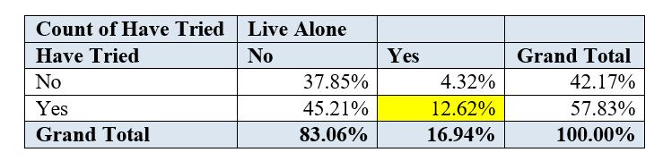
Visual from source page 26.
What is the probability that a randomly selected customer earns more than $50,000?
P(Income > 50,000) = 21.14% + 7.24% + 5.84% = 34.23% 34.23% of the customers earn more than $50,000. Solutions for Task 2c (to be completed in your own time)
Source: Workshop_slides_Week_2_with_solutions.pdf, page 27
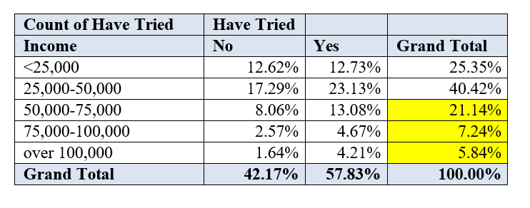
Visual from source page 27.
What is the probability that a randomly selected customer earns more than $50,000 and has tried the frozen food product?
P(Income > 50,000 AND Have Tried = Yes) = 13.08% + 4.67% + 4.21% = 21.96% 21.96% of the customers earn more than $50,000 and has tried the frozen food product. Solutions for Task 2d (to be completed in your own time)
Source: Workshop_slides_Week_2_with_solutions.pdf, page 28
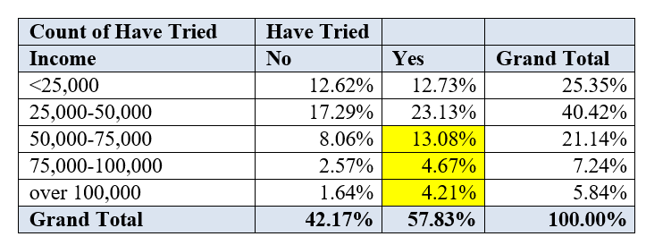
Visual from source page 28.
What proportion of customers who live alone have tried the frozen food product?
P(Have Tried = Yes | Live Alone = Yes) = 74.48% 74.48% of customers who live alone, have tried the frozen food. Solutions for Task 2e (to be completed in your own time)
Source: Workshop_slides_Week_2_with_solutions.pdf, page 29
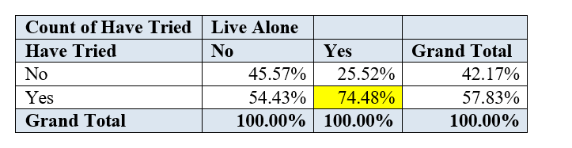
Visual from source page 29.
Solutions for Task 2f (to be completed in your own time)
What proportion of customers who have tried the frozen food product, live alone? P(Live Alone = Yes | Have Tried = Yes) = 21.82% 21.82% of customers who have tried the frozen food product, live alone.
Source: Workshop_slides_Week_2_with_solutions.pdf, page 30
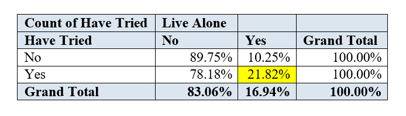
Visual from source page 30.
Solutions for Task 2g (to be completed in your own time)
Are there more males or females who have tried the frozen food product? P(Male | Have Tried = Yes) > P(Female | Have Tried= Yes) 56.36% > 43.64% Therefore, there are more males who have tried the frozen food product than females.
Source: Workshop_slides_Week_2_with_solutions.pdf, page 31
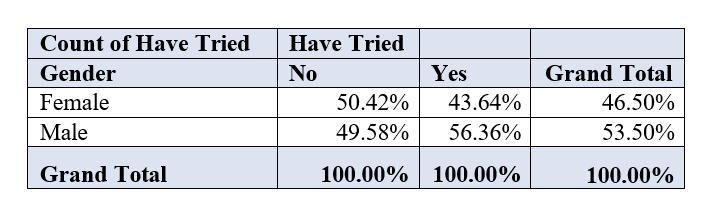
Visual from source page 31.
Motherboard
Digital World manufactures motherboards and has factories in China and Australia. Information about their production is provided in the Motherboard worksheet in the dataset Week 2 Workshop Data.xlsx. The company wishes to investigate the quality of the motherboards being manufactured from each of the factories. Use the following notation in all your answers: D: a motherboard is defective G: a motherboard is good (not defective) C: motherboard manufactured in China A: motherboard manufactured in Australia
Challenge
You are encouraged to work in groups.
Source: Workshop_slides_Week_2_with_solutions.pdf, page 33
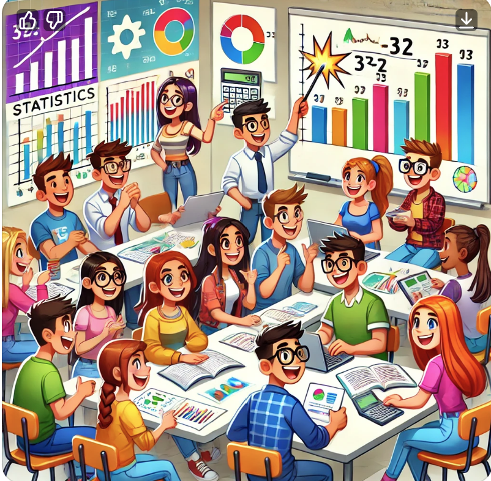
Please download and install the Slido app on all computers you use
How many motherboards are produced in China? ⓘ Start presenting to display the poll results on this slide.
Source: Workshop_slides_Week_2_with_solutions.pdf, page 34


Please download and install the Slido app on all computers you use
What is the probability that a randomly selected defective motherboard is from China? ⓘ Start presenting to display the poll results on this slide.
Source: Workshop_slides_Week_2_with_solutions.pdf, page 35
Please download and install the Slido app on all computers you use
What is the probability that a randomly selected motherboard from China is defective? ⓘ Start presenting to display the poll results on this slide.
Source: Workshop_slides_Week_2_with_solutions.pdf, page 36
Solutions
How many motherboards are produced in China? 65 What is the probability that a randomly selected defective motherboard is from China? P(C|D) = 33.33% 33.33% of defective motherboards are from China.
Source: Workshop_slides_Week_2_with_solutions.pdf, page 37
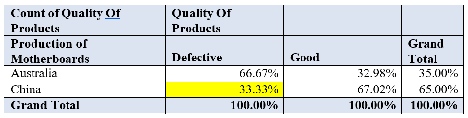
Visual from source page 37.
Solutions for Task 3c
What is the probability that a randomly selected motherboard from China is defective? P(D|C) = 3.08% 3.08% of motherboards from China are defective.
Source: Workshop_slides_Week_2_with_solutions.pdf, page 38
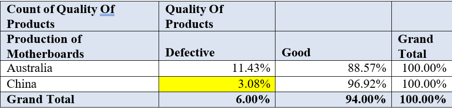
Visual from source page 38.
Part 2 of the workshop: Normal Distribution
- Probability is the area under a probability density function (PDF).
- The normal distribution: shape, location and distribution.
- How to specify a particular normal distribution.
- The effect of changing the mean and standard deviation.
- Finding areas under the standard normal curve using Excel.
Source: Workshop_slides_Week_2_with_solutions.pdf, page 39
Visual from source page 39.
Probability: as the area under a Probability density function (pdf)
The normal distribution: shape, location and distribution. How to specify a particular normal distribution The effect of changing the mean and standard deviation Finding areas under the standard normal curve: Using Excel Part 2 of the workshop: Normal Distribution
Probability Distribution
The histogram is a picture of the probability density in crude form Probability density describes how “dense” the distribution is over a data range Allows us to calculate the probability related to the variable of interest In statistics, we use a smooth mathematical function to model the probability density function (pdf) The area under the curve represents the probability
Source: Workshop_slides_Week_2_with_solutions.pdf, page 41
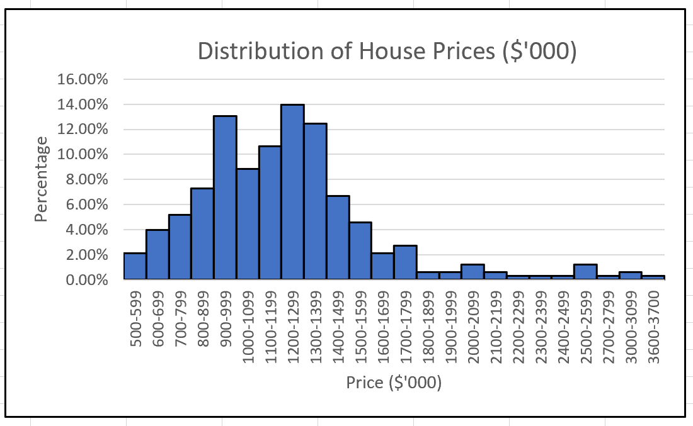
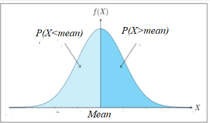
Probability Distribution: Normal Distribution
The most common distribution in statistics is the normal distribution It is a symmetric (bell-shaped) distribution The normal distribution has two features: Mean and Stdev Normal Distribution Notation: X \sim N(\text{Mean}, \text{Stdev}) or X \sim N(\mu, \sigma) Skewness = 0 Mean = Median = Mode
Source: Workshop_slides_Week_2_with_solutions.pdf, page 42
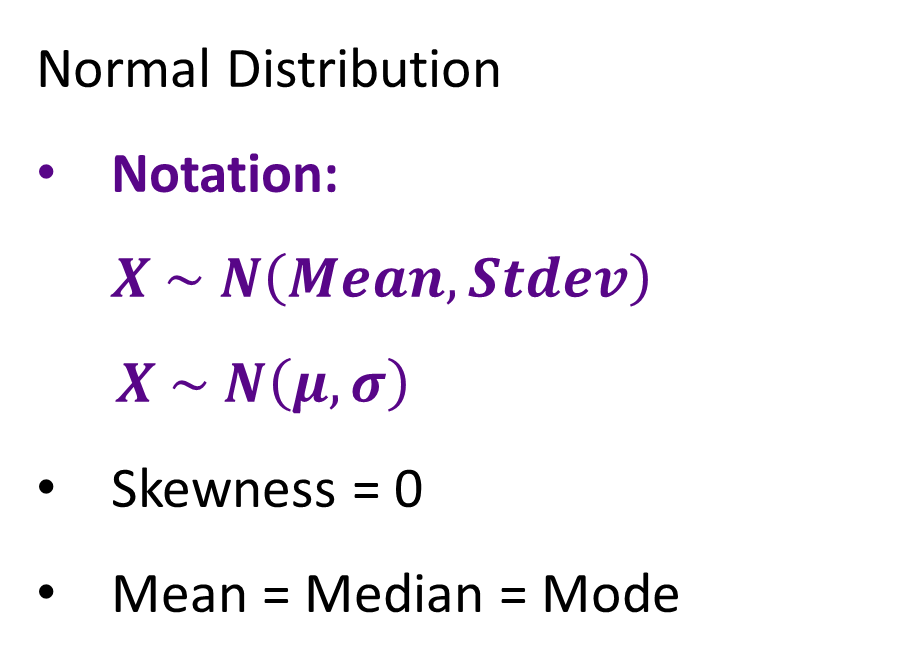
STANDARD Normal Distribution
A special case: STANDARD normal distribution Mean = 0 and Stdev = 1 Used in statistics to assess statistical uncertainty Standard Normal Distribution Notation: Z \sim N(0,1) Skewness = 0 Mean = Median = Mode
Source: Workshop_slides_Week_2_with_solutions.pdf, page 43
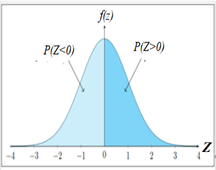
Normal Distribution & Standard normal distribution
X \sim N(\text{Mean}, \text{Stdev}) and Z \sim N(0,1)
Source: Workshop_slides_Week_2_with_solutions.pdf, page 44
Standard normal distribution: Excel
Question 1 P(Z<0) =NORM.S.DIST(0,TRUE) Question 2 P(Z>0) =1-NORM.S.DIST(0,TRUE) Question 3 P(Z<-1) =NORM.S.DIST(-1,TRUE) Question 4 P(-1>Z>1.5) =NORM.S.DIST(1.5,TRUE)-NORM.S.DIST(-1,TRUE) Question 5 P(Z>2) =1-NORM.S.DIST(2,TRUE) 0.5 0.5 0.158655254 0.0.774538 0.02275
Standard normal distribution: Excel
Question 6 Suppose Z has a standard normal distribution. For some value of z∗, the probability P(Z<z∗)=0.2843. Find z∗. To find z* =norm.s.inv(0.2843) = -0.57011 Question 7 Suppose Z has a standard normal distribution. For some value of z∗, the probability P(Z>z∗)=0.2843. Find z∗. =Norm.s.inv(1-0.2843) = 0.57011
Source: Workshop_slides_Week_2_with_solutions.pdf, page 46
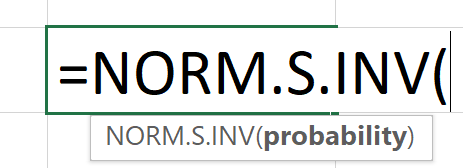
Visual from source page 46.
Checklist: General Probability & Normal Distribution
Use contingency table to calculate marginal, joint and conditional probabilities % of Grand Total % of Column Total % of Row Total Interpreting the relationship between two categorical variables Rule of Independence Probability: as the area under a Probability density function (pdf) The normal distribution: shape, location and distribution. How to specify a particular normal distribution The effect of changing the mean and standard deviation Finding areas under the standard normal curve: Using Excel